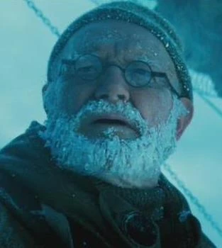
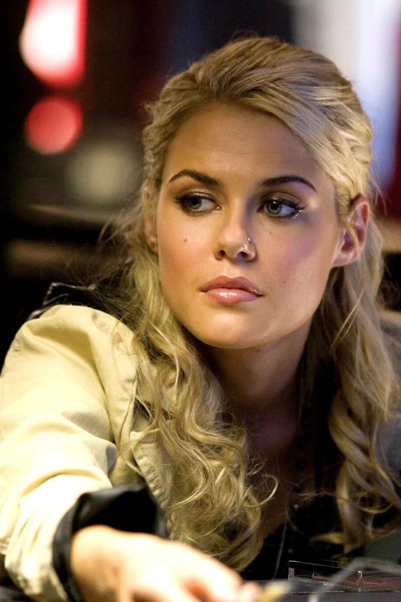
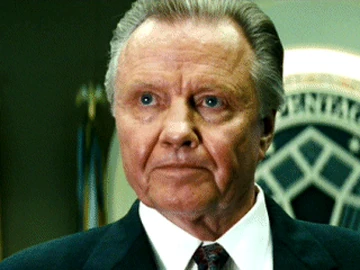
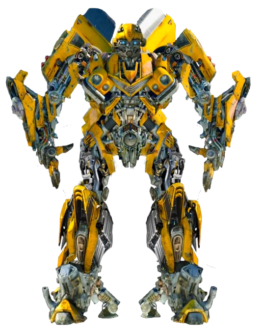
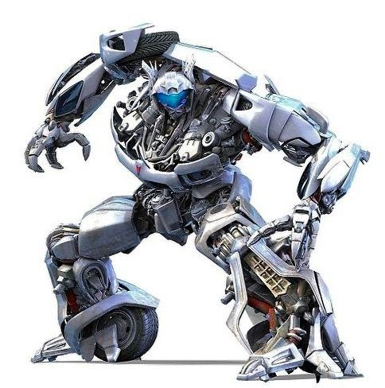
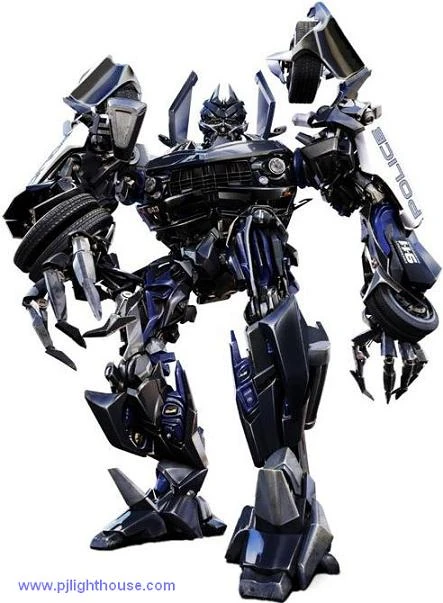

| Personaggio |
Descrizione |
Immagine |
| Sam Witwicky |
interpretato dall'attore statunitense Shia LaBeouf,
Sam viene dipinto come un adolescente goffo, loquace e socialmente impacciato.
La sua vita ruota attorno a obiettivi tipici della sua età.
Il suo desiderio principale è comprarsi la sua prima auto usata e
usarla per conquistare Mikaela Banes, la ragazza più popolare della scuola |
 |
| Mikaela Banes |
Il personaggio è interpretato dall'attrice Megan Fox.
Inizialmente sembra la classica ragazza popolare del liceo, ma è in realtà una meccanica esperta.
Possiede una conoscenza approfondita delle auto e della meccanica, abilità ereditate da suo padre.
È "tosta", indipendente e non teme di sporcarsi le mani o affrontare situazioni pericolose. |
 |
| Ron Witwicky |
È interpretato dall'attore Kevin Dunn.
È il padre comico e spesso ignaro delle avventure che coinvolgono suo figlio, gli Autobot e i Decepticon.
Sposato con Judy Witwicky, è molto protettivo nei confronti della sua famiglia e del suo giardino.
Nei film, la sua professione viene indicata come giardiniere. |
 |
| Judy Witwicky |
Interpretata dall’attrice statunitense Julie White.
È la madre di Sam Witwicky e viene mostrata come una donna protettiva, ironica e un po’ invadente,
ma allo stesso tempo affettuosa e di supporto alla sua famiglia. |
 |
| Capitano Archibald Amundsen Witwicky |
Interpretato da W. Morgan Sheppard. È il bisnonno di Sam che nel 1897, durante una spedizione al Polo Nord,
scoprì qualcosa che lo face impazzire, nessuno seppe cosa scoprì l'unica cosa certa e che non fu più lo stesso. |
 |
| Maggie Madsen |
interpretata dall’attrice australiana Rachael Taylor.
È una giovane analista informatica brillante e determinata, che gioca un ruolo chiave nel decifrare
i segnali dei Decepticon e aiutare il governo a comprendere la minaccia. |
 |
| Glen Witmann |
interpretato dall'attore e comico statunitense Anthony Anderson.
Hacker e amico di Maggie Madsen che l'aiuta a decifrare i segnali dei Decepticon |
 |
| Jhon keller |
interpretato da Jon Voight attore statunitense, vincitore di un Premio Oscar per Un uomo da marciapiede
e di quattro Golden Globe, Nel film è il segretario della Difesa degli Stati Uniti.
Coordina la risposta del governo alla minaccia dei Decepticon, gestendo la crisi con fermezza e pragmatismo. |
 |
| Tom Banackeck |
interpretato da Michael O’Neill, è Direttore del Settore sette, un’agenzia governativa segreta che si occupa
di fenomeni extraterrestri e tecnologici, il suo compito è quello di supervisiona le operazioni
legate alla scoperta dei Transformers e alla gestione della minaccia dei Decepticon. |

|
| Agente Simmons |
interpretato da John Turturro un'attore statunitense.Agente del settore sette,è tra i primi a confrontarsi
direttamente con gli Autobot e i Decepticon, cercando di mantenere il controllo della situazione con metodi
spesso bruschi e discutibili. |
 |
| Capitano Lennox |
interpretato da Josh Duhamel un'attore e modello statunitense nel film intepreta il Capitano dell’esercito statunitense,
leader di una squadra di ranger.È tra i primi militari a scontrarsi con i Decepticon
in Medio Oriente e successivamente collabora con gli Autobot per difendere la Terra. |
 |
| Sergente Epps |
interpretato da Tyrese Gibson attore, cantante e modello statunitense nel film interpreta il
Sergente dell’aeronautica statunitense, membro della squadra guidata dal Capitano Lennox. |
 |
| Colonello Morshower |
interpretato da Glenn Morshower Attore statunitense che nel film interpreta il Colonnello dell’aeronautica statunitense.
È al comando della base militare in Qatar che viene attaccata dal Decepticon Blackout all’inizio del film.
Rappresenta la catena di comando militare e la reazione immediata dell’esercito di fronte alla minaccia aliena. |
 |
Autobot
| Personaggio |
Descrizione |
Immagine |
| Optimus Prime |
Optimus Prime è il leader degli Autobot, doppiato da Peter Cullen, doppiatore del personaggio a partire dagli anni ottanta.
È introdotto come un comandante saggio e coraggioso, simbolo di speranza e giustizia nella lotta contro i Decepticon.
Optimus e capice di trasformarsi in un Peterbilt 379 Semi Truck, un camion pesante americano con livrea rossa e blu e dettagli a fiamme.
Combatte con 2 Ion Blaster(un'arma precisa e potente) e delle spade di Energon |
 |
| Bumblebee |
Non presenta doppiatori essendo il guasto alla scatola subito in battaglia su Cybertron.
È stato il primo contatto tra gli autobot e Sam essendo la prima auto di Sam e di conseguenza il suo protettore.
Bumblebee all'inizio lo vediamo capace di trasformarsi in una Chevrolet Camaro gialla con strisce nere del 1977 per poi
cambiare in una Chevrolet Camaro Concept del 2006 più moderna e sportiva.
combatte con un cannone al plasma montato sul braccio destro e dei missili e Blaster integrati sulle spalle
È Leale e protettivo, sempre pronto a difendere Sam e gli umani è giocoso e affettuoso, mostra un lato più umano e
simpatico rispetto agli altri Autobot è coraggioso, affronta i Decepticon senza esitazione e Comunica
in modo creativo, usa la radio per esprimere emozioni e pensieri. |
 |
| IronHide |
Doppiato da Jess Harnell. Autobot esperto in armi e combattimento e braccio destro di Optimus Prime.
È il “militare” del gruppo, sempre pronto allo scontro e protettivo verso gli alleati umani.
si trasforma in un GMC TopKick C4500 pickup nero, combatte con dei cannoni al plasma montati su entrambe le braccia.
Ha una Grande resistenza fisica, che lo rende uno dei combattenti più duri tra gli Autobot.
Ha un carattere aggressivo e diretto, sempre pronto a combattere è leale, profondamente fedele a
Optimus Prime e alla causa degli Autobot, molto Protettivo, soprattutto verso gli umani, anche se con un atteggiamento brusco e
ironico e ruvido, spesso con battute secche e militari. |
 |
| Ratchet |
viene doppiato da Robert Foxworth. È il “medico di campo” del gruppo, responsabile di riparazioni e supporto tecnico.
si transforma in un Hummer H2 giallo modificato in versione veicolo di soccorso. È equipaggiato con un
cannone laser montato sul braccio, usato in combattimento; armi energetiche secondarie, per difesa e supporto e
strumenti medici integrati, che gli permettono di riparare e curare gli Autobot durante le battaglie.
Si presenta con un carattere responsabile e premuroso, sempre attento alla salute dei suoi compagni.
Pragmatico, unisce competenze mediche e capacità di combattimento.Leale, fedele a Optimus Prime e alla missione degli Autobot.
Serio e professionale, e molto meno ironico rispetto ad altri membri del gruppo.
|
 |
| Jazz |
Doppiato da Darius McCrary. Ufficiale degli Autobot e braccio destro di Optimus Prime.
È l’Autobot più “stiloso” e spigliato, che porta carisma e leggerezza nel gruppo.
Si trasforma in una Pontiac Solstice GXP argentata. Combatte con dei cannoni e blaster energetici, montati sulle braccia.
È molto agilite e veloce, il che lo rendono un combattente rapido e imprevedibile. Ha un carattere carismatico e spigliato,
ama distinguersi e mostrare il suo stile, e fedele a Optimus Prime e alla missione degli Autobot.
Autobot molto coraggioso, affronta nemici molto più grandi e potenti senza esitazione.
Ironico e vivace, porta leggerezza anche nei momenti di tensione. |
 |
Decepticon
| Personaggio |
Descrizione |
Immagine |
| Megatron |
Doppiato da Hugo Weaving.È Leader supremo dei Decepticon e nemico giurato di Optimus Prime,
viene risvegliato dalla settore sette dopo essere rimasto congelato per decenni,
il suo obiettivo è quello di recuperare l’AllSpark per conquistare la Terra e trasformarla in un nuovo Cybertron.
Si trasforma in un Jet Cybertroniano e equipaggiato con Fusion Cannon un'arma devastante montata sul braccio, capace di distruggere
qualsiasi cosa con un singolo colpo; Spade e lame energetiche, usate nei combattimenti corpo a corpo e una Forza fisica immensa,
superiore a quella della maggior parte degli Autobot. Megatron è tiranno spietato che domina i Decepticon con la paura e
ossessionato dal potere e dalla conquista ma molto intelligente e manipolatore, capace di strategie complesse. |
 |
| Starscream |
Doppiato da Charlie Adler. Braccio destro di Megatron, ma con ambizioni di leadership è il classico “secondo in comando”
che trama nell’ombra per prendere il posto del leader. Si trasforma in un caccia F-22 Raptor. È equipaggiato con
Missili aria-aria e aria-terra, integrati nella sua forma di jet; Cannoni energetici, usati in combattimento ravvicinato.
È molto agilite il che lo rende uno dei Decepticon più pericolosi in battaglia. È Ambizioso e traditore, sempre pronto
a spodestare Megatron, ama combattere e mostrare la sua superiorità ma è allo stesso tempo un codardo quando conviene e
non esita a ritirarsi se la situazione diventa troppo rischiosa. |
 |
| Blackout |
Non ha un doppiatore umano tradizionale, i suoi suoni e versi sono stati creati digitalmente.
Primo Decepticon a comparire nel film. Attacca la base militare americana in Qatar, dando inizio alla minaccia globale.
Si transforma in un Elicottero militare MH-53 Pave Low. Combatte con cannoni rotanti e mitragliatrici pesanti,
integrati nella forma di elicottero; Missili aria-terra, usati per attacchi devastanti e anche di un piccolo drone Decepticon
che può essere rilasciato da Blackout per infiltrazioni e combattimenti. |
 |
| Bonecrusher |
Guerriero Decepticon, noto per la sua aggressività e distruttività è il “bruto” del gruppo, simbolo
della violenza cieca dei Decepticon. Si transforma in un Veicolo militare Buffalo H Mine-Protected, progettato per lo sminamento.
Artigli e lame meccaniche, usati per attacchi ravvicinati; Forza fisica devastante, che gli permette di distruggere veicoli
e infrastrutture con facilità; ha una grande resistenza corazzata, che lo rende difficile da abbattere. |
 |
| Brawl |
Guerriero corazzato dei Decepticon.
È il “tank” del gruppo, simbolo della potenza militare e della distruzione,
capace di trasformarsi in carro armato M1 Abrams pesantemente modificato.
Combatte con il cannone principale del carro armato,
Mitragliatrici e lanciamissili integrati e un'enorme forza fisica che lo rendono
temibile anche nel corpo a corpo |
 |
| Barricade |
Decepticon infiltratore, incaricato di catturare Sam Witwicky per recuperare
informazioni sulla posizione dell'AllSpark.
È il “cacciatore” del gruppo, che usa l’inganno e la forza per raggiungere i suoi obiettivi.
Si transforma in una ford Mustang Saleen della polizia, nera con scritte “To punish and enslave”
Armato di cannoni e blaster, Artigli meccanici e una grande Velocità e agilità che lo rendono un
avversario pericoloso |
 |
| Frenzy |
Hacker e infiltratore dei Decepticon.
Si infiltra nei sistemi informatici del governo per rintracciare SAm Witwicky.
È capce di transformarsi in un lettore CD portatile e successivamente un telefono cellulare.
È armato di Artigli e lame meccaniche, agile e veloce che gli permettono di muoversi rapidamente e colpire di sorpresa
ma la sua capacità di hacking e la sua arma più potente, usata per sabotare sistemi umani
|
 |